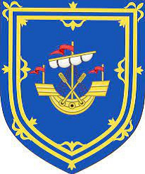

Greve av Orkneyöarna. Blev ca 47 år.
omkring 1375 Rosslyn Castle, Edinburgh, Scotland. [1]
1422 Orkney Islands, Scotland. [1]
Henry II Sinclair, Earl of Orkney
Från Wikipedia, den fria encyklopedin
Hoppa till navigeringHoppa för att söka
Henry Sinclair
Earl of Orkney
Lord Sinclair
Baron av Roslin
Arms of the Earl of Orkney.svgArms of Lord Sinclair.svgBlason Henri Ier Sinclair.svg
Earl of Orkney, Lord Sinclair och Baron of Roslin vapensköldar
Företrädare Henry I Sinclair, Earl of Orkney
Efterträdare William Sinclair, 3:e jarl av Orkney, 1:e jarl av Caithness, 11:e baron av Roslin och 2:e lord Sinclair
Född c. 1375
dog c. 1420
Adlig familj Klanen Sinclair
Henry II Sinclair, Earl of Orkney (ca 1375 – 1420) var Jarl (jarl) av Orkney , baron av Roslin och Pantler av Skottland . [1] [2] Enligt Roland Saint-Clairs skrift i slutet av 1800-talet var Henry Sinclair också den förste i sin familj som innehade titeln Lord Sinclair . [3]
Innehåll
1 Tidigt liv
2 Earl of Orkney
3 Äktenskap och problem
4 Se även
5 Referenser
5.1 Källor
Tidigt liv
Rosslyn eller Roslin Castle , säte för Sinclairs som var baroner av Roslin, rekonstruktionsbild
Han var son till Henry I Sinclair, Earl of Orkney , av hans fru Jean, dotter till John Halyburton av Dirleton . Han gifte sig med Egida Douglas, dotter till Sir William Douglas av Nithsdale och mordotter till kung Robert II av Skottland . Sir William Douglas mördades av en grupp lönnmördare som hade anställts av Lord Clifford och som ett resultat av detta ärvde Sinclair genom sin fru hela Lordship of Nithsdale . [2]
Earl of Orkney
Sinclair var en av dem som tillfångatogs efter slaget vid Homildon Hill 1402, men släpptes mot lösen. [2] [4] Han hade efterträtt sin far, de facto , som Jarl 1404; det finns inga uppgifter om att han någonsin officiellt installerats som Jarl, och inga säkra uppgifter om att han någonsin besökt sitt jarldom. [5]
Han var en av dem som följde med James Duke of Rothesay på hans resa till Frankrike ombord på Maryenknyght , som tillfångatogs av engelska pirater utanför Flamborough Head 1406. Han följde prinsen i fångenskap, men släpptes snart. Därefter var han ofta i England i affärer i samband med kungens fängelse. [2]
Henry Sinclair dog av influensa den 1 februari 1420. [4]
Äktenskap och problem
Omkring 1407 gifte han sig med Egidia Douglas, dotter till Sir William Douglas av Nithsdale och mordotter till kung Robert II av Skottland . [2] [6]
William Sinclair , den siste Jarl of Orkney och förste Earl of Caithness
Beatrix Sinclair, som gifte sig med James Douglas, 7:e Earl of Douglas .